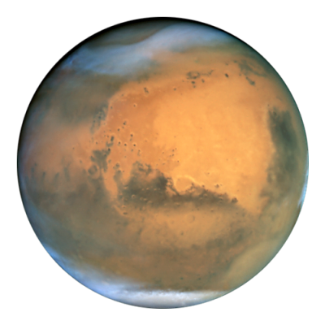

Venere è il secondo pianeta del Sistema solare in ordine di distanza dal Sole con un'orbita quasi circolare che lo porta a compiere una rivoluzione in 224,7 giorni terrestri. Prende il nome dalla dea romana dell'amore e della bellezza e il suo simbolo astronomico è la rappresentazione stilizzata della mano di Venere che sorregge uno specchio.  Con una magnitudine massima di -4,6, è l'oggetto naturale più luminoso nel cielo notturno dopo la Luna e per questo motivo è conosciuto fin dall'antichità. Venere è visibile soltanto poco prima dell'alba o poco dopo il tramonto e per questa ragione è spesso stato chiamato da popoli antichi la "Stella del Mattino" o la "Stella della Sera", fino a quando Pitagora comprese che si trattava dello stesso oggetto. Classificato come un pianeta terrestre, a volte è definito il "pianeta gemello" della Terra, cui è molto simile per dimensioni e massa. Tuttavia per altri aspetti è piuttosto differente dal nostro pianeta. Infatti Venere possiede un'atmosfera costituita principalmente da anidride carbonica, molto più densa di quella terrestre, con una pressione al livello del suolo pari a 92 atmosfere. La densità e la composizione dell'atmosfera creano un impressionante effetto serra che rende Venere il pianeta più caldo del sistema solare. Venere è avvolto da uno spesso strato di nubi altamente riflettenti, composte principalmente di acido solforico, che impediscono la visione nello spettro visibile della superficie dallo spazio. Il pianeta non è dotato di satelliti o anelli e ha un campo magnetico più debole di quello terrestre.
Un transito di Venere è un evento molto raro e avviene quando il pianeta si interpone fra la Terra e il Sole, oscurandone una piccola parte del disco. Solo gli ultimi due transiti, quelli del 2004 e del 2012, sono avvenuti successivamente all'acquisizione di conoscenze sul pianeta grazie all'esplorazione in loco con sonde spaziali e sono stati osservati con strumenti scientifici moderni. Nella storia dell'astronomia moderna e contemporanea i transiti di Venere sono considerati molto importanti sotto diversi punti di vista, tra cui quello della esatta misurazione dell'unità astronomica, la distanza tra la Terra e il Sole. I transiti avvengono a coppie, con un intervallo di otto anni tra i transiti di ciascuna coppia e intervalli di 121,5 e 105,5 anni tra coppie successive. C'è qualche menzione di transiti di Venere sul Sole in epoche antiche, come quella dello scienziato persiano Avicenna che riporta di aver osservato Venere nel 1032 come una macchia che passava sopra il Sole, concludendo che il pianeta fosse più vicino al Sole di quanto lo sia la Terra. Anche l'astronomo arabo Ibn Bajja menzionò transiti di Mercurio e Venere sul Sole nel XII secolo; tuttavia studi storici di Bernard R. Goldstein e altri nel XX secolo escludono che questi transiti possano essere stati effettivamente osservati ad occhio nudo, concludendo che i due astronomi molto probabilmente osservarono delle macchie solari. Transito di Venere sul disco solare ripreso l'8 giugno 2004 dall'osservatorio solare TRACE. La prima previsione di un transito di Venere fu di Keplero nel 1631, anche se nessuno all'epoca riuscì ad osservarlo perché non visibile dall'Europa. Keplero non aveva previsto il transito che avvenne 8 anni dopo, cosa che fece il giovane astronomo britannico Jeremiah Horrocks, che nel 1639 osservò per primo un transito di Venere davanti al Sole. Da Horrocks in poi sono stati osservati solo altri sei transiti nel corso della storia, tra cui quello del 1761 che permise la scoperta dell'esistenza di un'atmosfera su Venere.
© Copyright "Astronomy", 2018